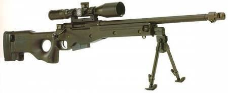
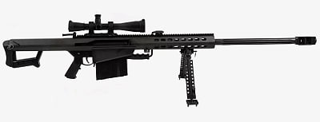
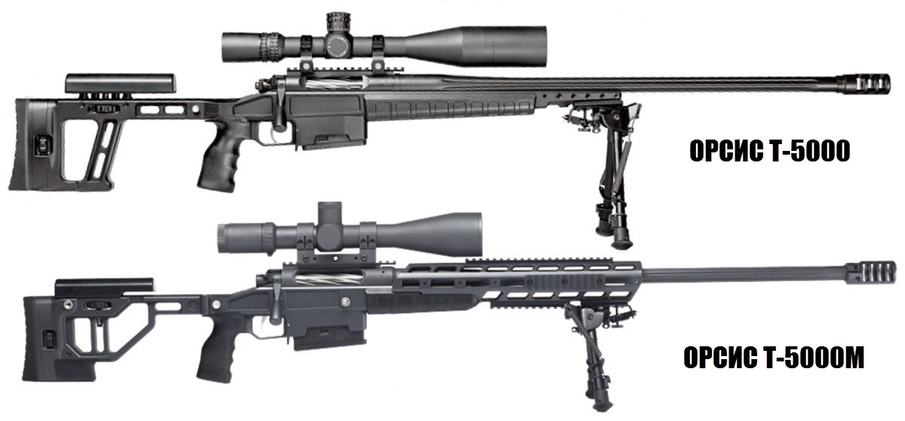
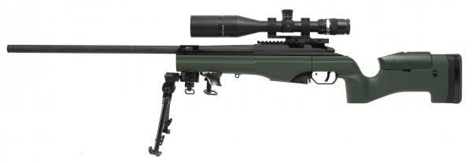
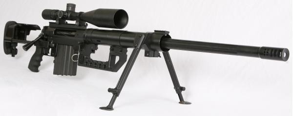
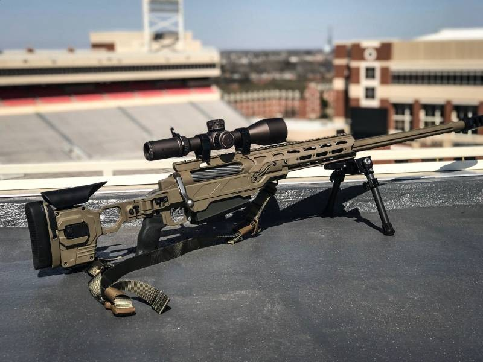

L96A1
Снайперские винтовки 1. L96A1 Калибр: .338 Lapua Magnum Убойная дальность: до 1500 м Вес: 6.8 кг Особенности: высокая точность, складной приклад, ручная перезарядка.
Barrett M8
M8 Калибр: .50 BMG Убойная дальность: до 2000 м Вес: 13.6 кг Особенности: полуавтоматическая, отдача с коротким ходом ствола.
ORSIS T-5000
T-5000 Калибр: .338, .308, 6.5 Creedmoor Убойная дальность: 1500+ м Вес: 6–7 кг Особенности: высокоточная российская винтовка.
Sako TRG-42
TRG-42 Калибр: .338, .300, 7.62 Дальность: до 1500 м Вес: 6.4–7.5 кг
McMillan TAC-50
TAC-50 Калибр: .50 BMG Дальность: до 2700 м Вес: 12 кг Особенности: используется спецназом.
CheyTac M200 Intervention
M200 Intervention Калибр: .408/.375 CheyTac Дальность: 2000+ м Вес: 12–15 кг Особенности: высокоточная дальнобойная винтовка.